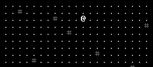

This was asked about in the SadConsole discord, so I figured I'd write up a short guide on how to do it. Apparently "smooth movement" between tiles, rather than teleporting to them. Start with the Chapter 2 code, then make the following adjustments.
In Data/Renderable make it inherit from ScreenSurface, with : base(1, 1). This means every entity is actually a ScreenSurface (like a console or window), and as such can use PixelPositioning. Next in UI/UI_GameArea add the following variables to the top of your file.
Next, you have to prepare the Player to be drawn in the new way. Remove the old Player print in Update, then in the UI_GameArea constructor call SquareCon.Children.Add on the Player. Set the Player.Font to GameSettings.SquareFont, Print on the Player at 0,0 the Players appearance, and set Player.UsePixelPositioning to true. This should look like the following:
Now in Input, instead of setting the Players X and Y coordinates for a successful move, set moveFinalX to dx * 12, and moveFinalY to dy * 12. This is effectively saying the same thing as the old code, but using the PixelPositioning (which requires we move 12 pixels to move a tile, since that's the size of our font). Additionally, set moveDX and moveDY to 0 here to make sure our movement "buffer" is cleared. Amended Input follows.
Finally in Update we need to change how we draw the player. Before the Con Clears but after the call to DrawBox, we need to do several things. First, check to see if moveFinalX or moveFinalY aren't equal to zero. If so, we've received a movement command. Create local variables for dx and dy, set them to Math.Sign(moveFinalX) * 2, and Math.Sign(moveFinalY) * 2. This function returns a -1 for negative numbers, 0 for zero, and 1 for positive numbers, so we can determine where we're moving to without complicated code. Add dx and dy to moveDX and moveDY, then if both are equal to their respective Final variables, add Math.Sign of moveFinalX and moveFinalY to the respective Player.X and Player.Y. Finally set the four smooth movement variables to zero. Outside the if statements, create a Point with moveDX and moveDY. Then set the Player.Position to X (44 + Player.X) * 12, and Player.Y * 12, plus the new Point you just made with the movement variables. Now if everything went according to plan, you should have a smoothly moving player icon! You can use similar code to move enemies smoothly if desired. Final Update code follows for clarity.
And it should look something like this tiny gif.
